Published
Flood map for planning following release with significant map and boundary drawing improvements.
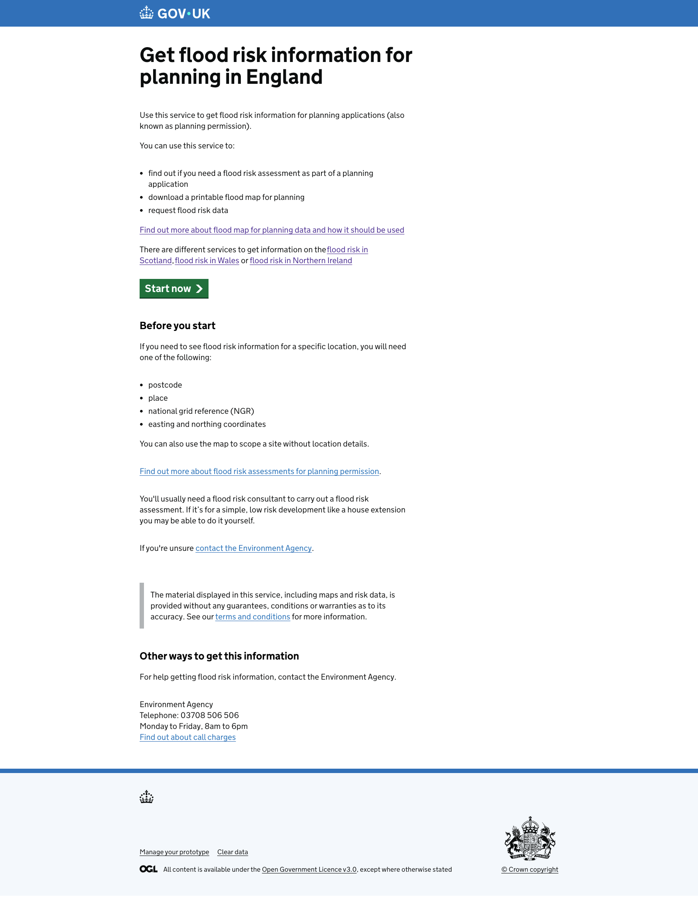
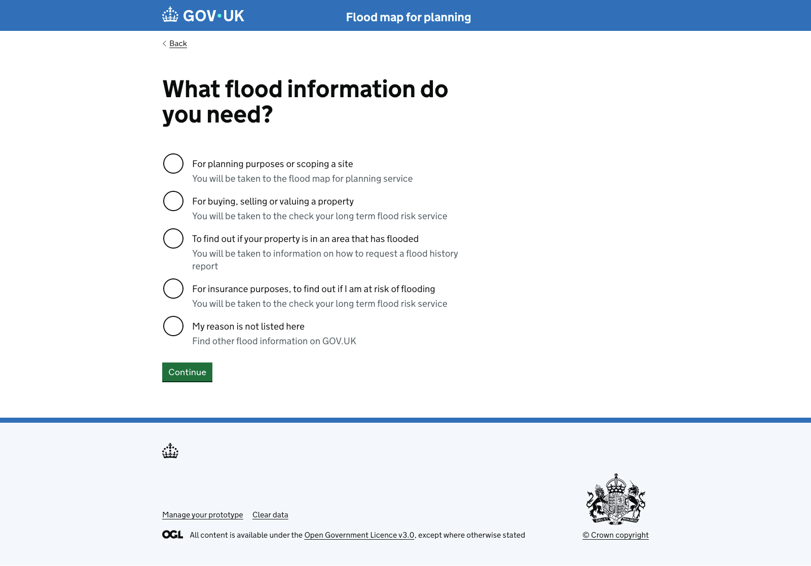
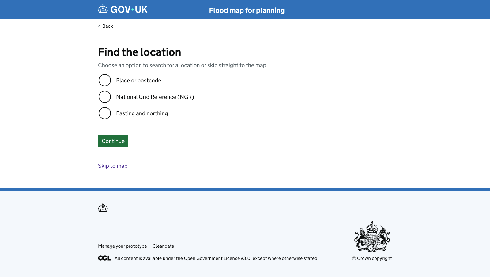
Banner prompt to click the map shown at the top of the map. Boundary menu section updated with new title, description and polygon draw. New show/hide buttons added.
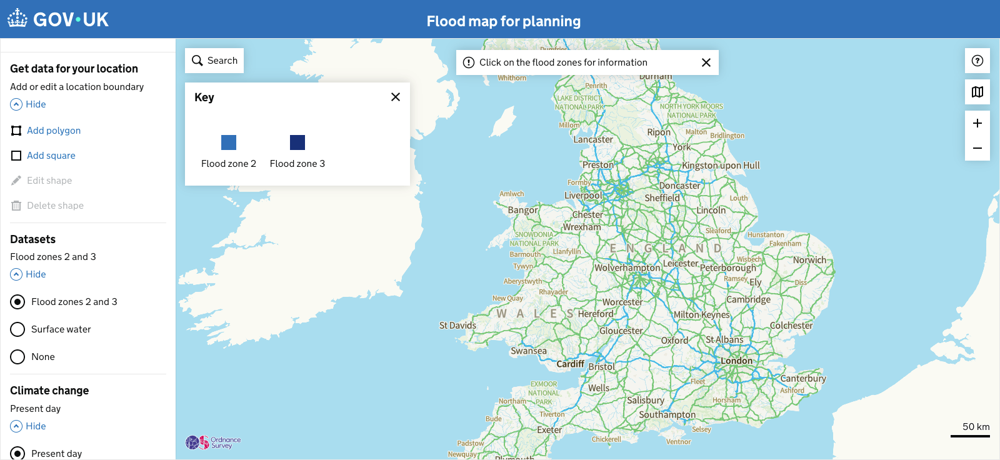
Layer opacity slider added.
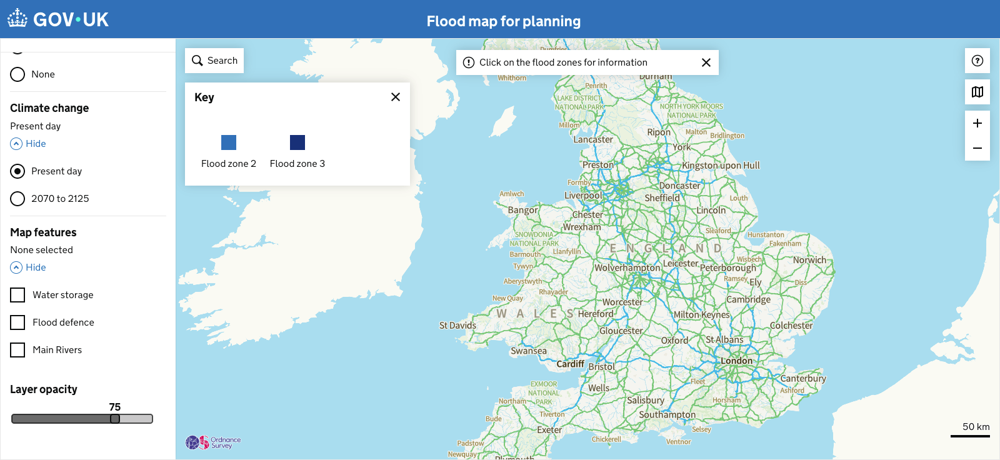
When surface water is selected, the default Annual likelihood selected is 1 in 100.
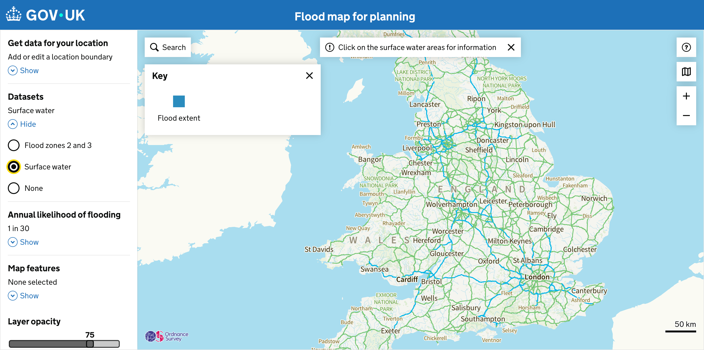
Boundary dimensions added to confirmed (double click) shapes in the left hand panel.
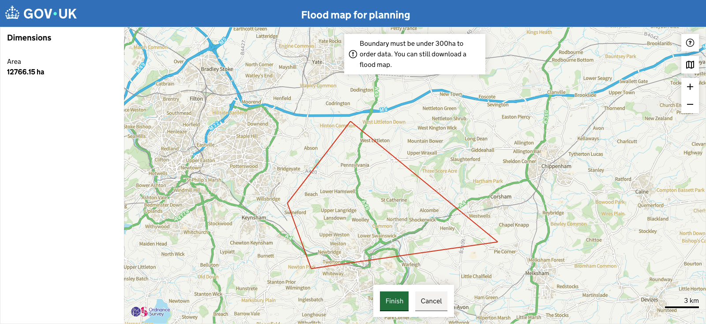
Various updates in relation to draw boundary changes made to this page.
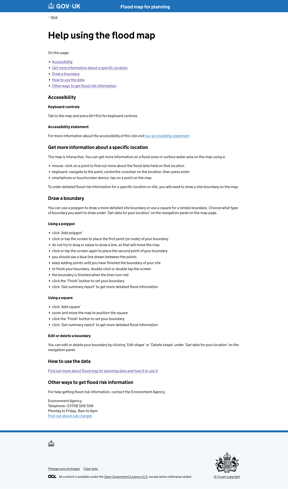
Contact details added.
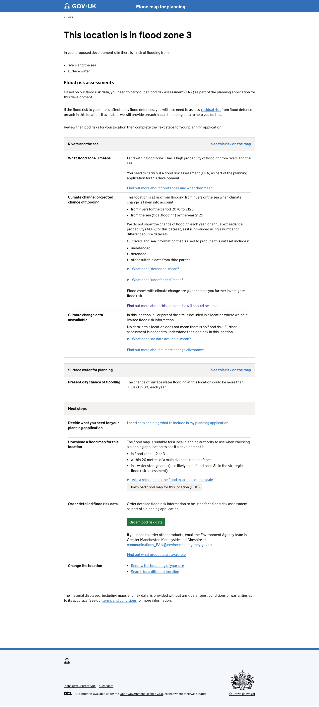
Button and message added to prevent P4 requests for those with an oversized boundary. User directed back to reduce their boundary size to progress to P4 request.
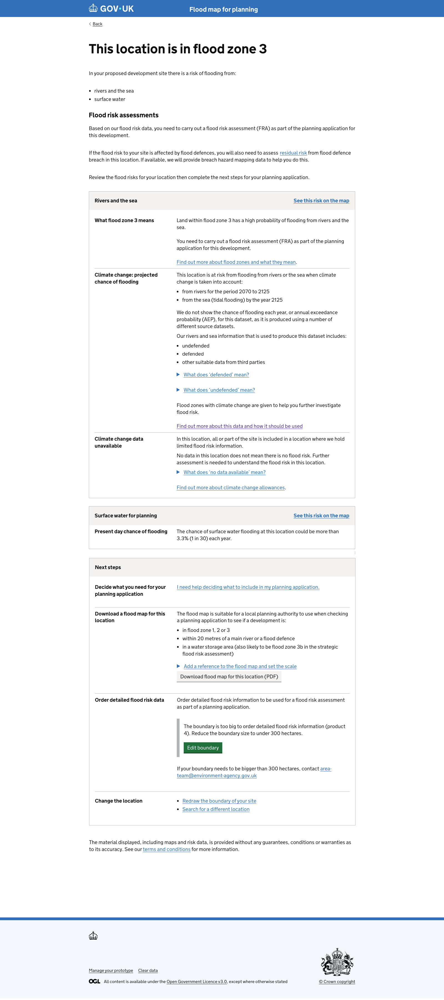
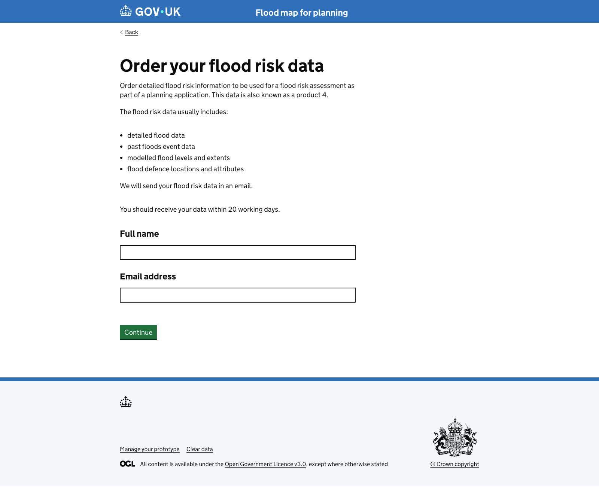
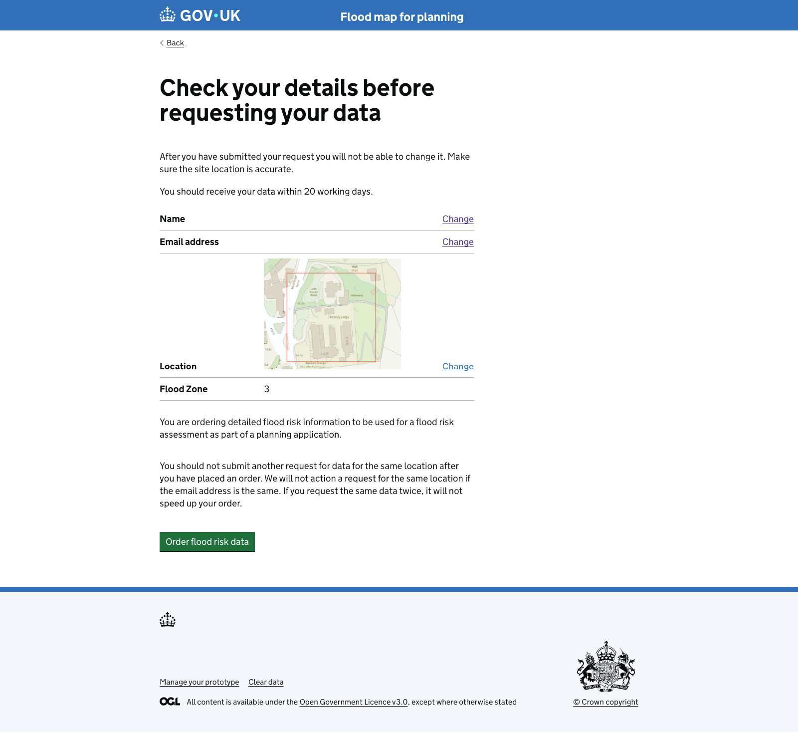
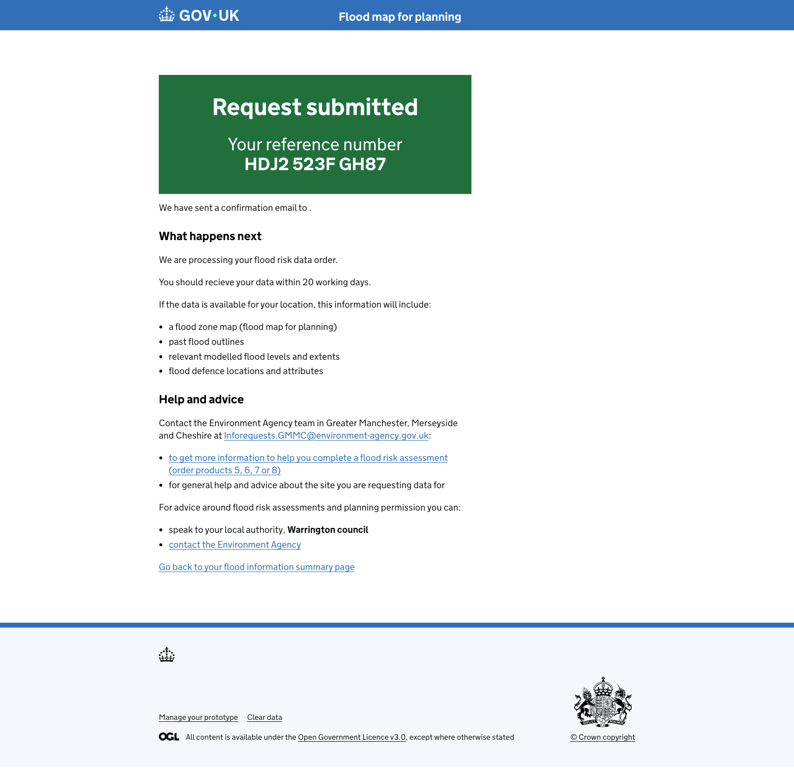
New error page added for locations searched from location page that are out of England.
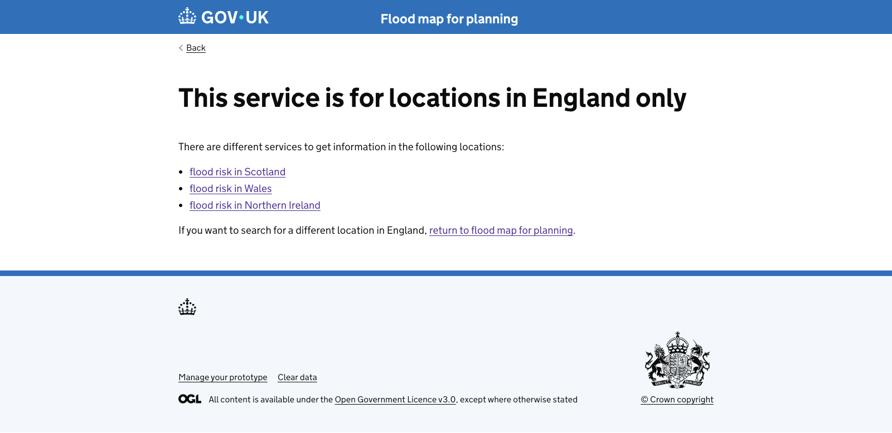
Updated with further info on P1 download, addition of area contact details, removal of check for flooding link for surface water info.
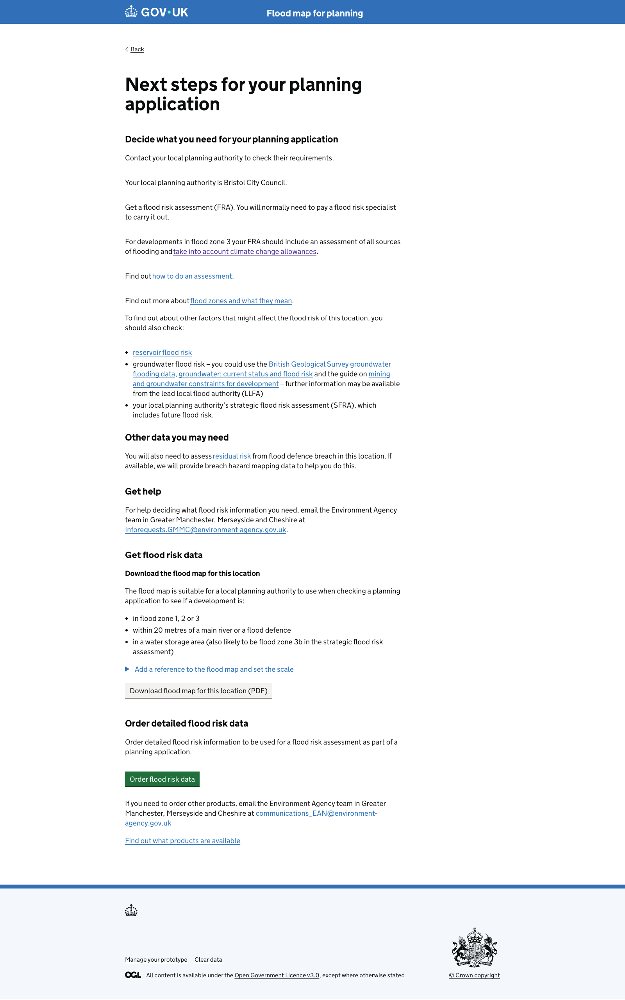
Updated to include version with 300 hectares maximum boundary size.
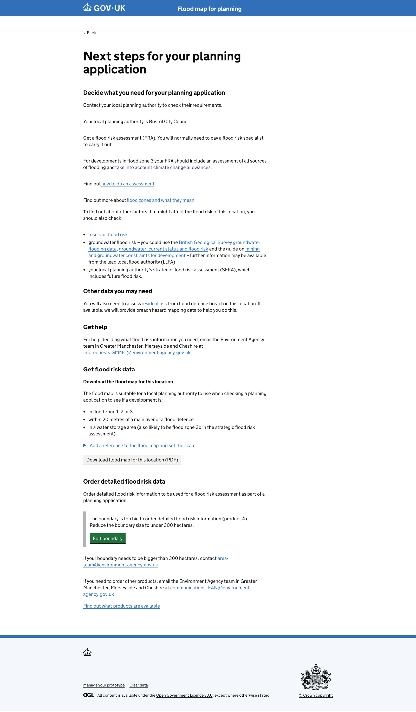
{% endblock %}